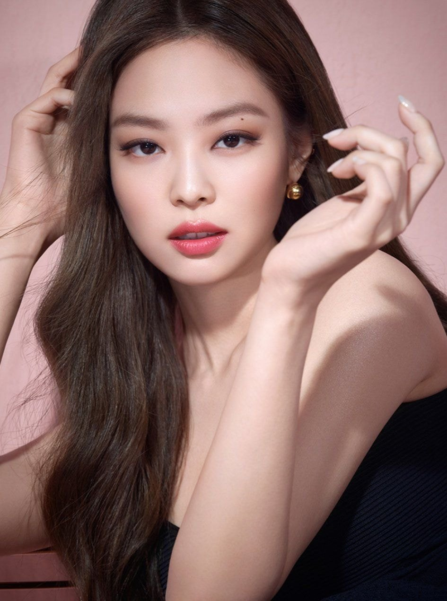
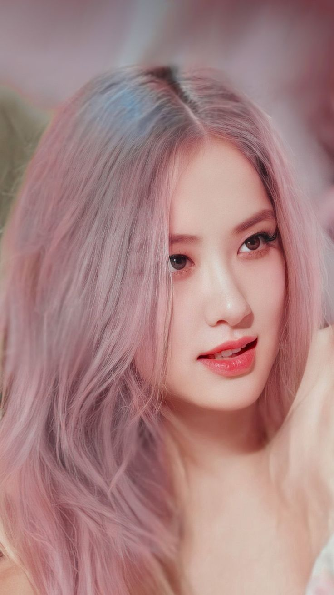
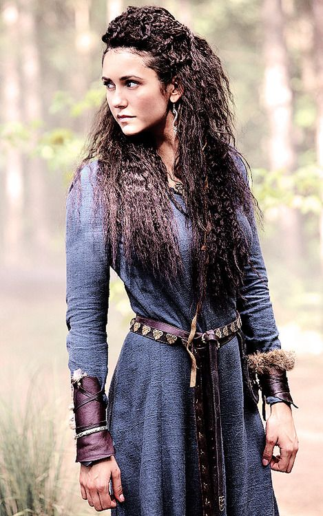
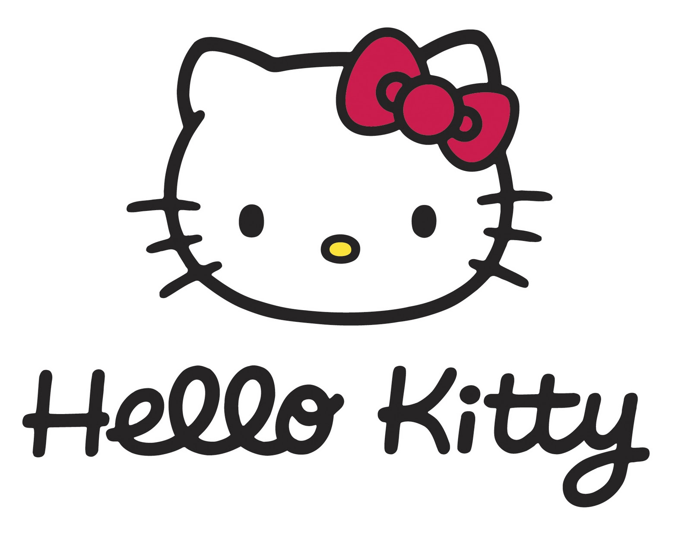

Jennie
In November 2018, Jennie made her debut as a solo artist with the single "Solo", which topped South Korea's Gaon Digital Chart and the US Billboard World Digital Songs chart. Her single "You & Me" (2023) reached number one on the Billboard Global Excl. U.S. and the top five in South Korea, while "One of the Girls" (2023) also entered the top ten of the Billboard Global 200 and became the highest-charting song by a Korean female soloist on the US Billboard Hot 100. In November 2023, Jennie established her own label named Odd Atelier.
 LEARN MORELisa
Lisa made her solo music debut with her single album Lalisa in September 2021, which made her the first female artist to sell 736,000 copies of an album in its first week in South Korea. The music video for its lead single of the same name broke the record for the most-viewed music video in the first 24 hours on YouTube by a solo artist. Both "Lalisa" and the album's viral second single "Money" charted in the top ten of the Billboard Global 200, the latter becoming the first multiweek charting song by a female K-pop soloist on the US Billboard Hot 100 and the UK Singles Chart. Lalisa and "Money" became the first album and song by a K-pop solo artist to reach one billion streams on Spotify, respectively. In February 2024, Lisa established her own management company named Lloud.
LEARN MOREJisoo
Jisoo made her solo music debut with the single album Me in March 2023. The album debuted at number one on the Circle Album Chart with 1.03 million copies sold in less than two days, becoming the best-selling album of all time by a female soloist in South Korea and the first to sell over a million copies. Its lead single "Flower" was a commercial success, peaking at number two on the Billboard Global 200 and the Circle Digital Chart and becoming the highest-charting song by a Korean female soloist on the Canadian Hot 100 and the UK Singles Chart.
 LEARN MORE
LEARN MORE
Rosé
In March 2021, Rosé made her solo debut with the single album R. The album sold 448,089 copies in its first week, the highest figure by a Korean female soloist. Its lead single "On the Ground" peaked in the top five of South Korea's Gaon Digital Chart and became the highest-charting song at the time by a Korean female soloist on the US Billboard Hot 100, the Canadian Hot 100, and the UK Singles Chart. It was the first song by a Korean solo artist to top the Billboard Global 200, and broke the record for the most-viewed music video in the first 24 hours on YouTube by a Korean solo artist. The album's second single "Gone" peaked in the top ten in South Korea as well.
 LEARN MOREElena Gilbert
Elena had been struggling to live a normal life ever since her adoptive parents, Miranda and Grayson Gilbert, died in a car accident when she was seventeen years old. Her life also changed drastically as she and her friends are caught up in the supernatural world that surrounds them and are forced to face powerful supernatural enemies. Elena was described as a star student. She was popular, sporty, smart, compassionate, empathetic, caring and friendly. She could be very vulnerable and a damsel in distress.
LEARN MOREKatherine Pierce
Despite her innocence and naivety, Katerina had a sense of self-preservation and immediately sought to protect herself against Klaus by stealing the moonstone and escaping the ritual that meant her death in the process. She had sought out vampires, Rose and Trevor for assistance, but betrayed them by consciously deciding to become a vampire herself for survival and igniting Klaus' wrath upon them all.
LEARN MORETatia
She was described as the purest out of all the Petrova doppelgängers. She also, in her brief appearances, seemed to be outgoing and inclined to live life to the fullest, judging by the fact that she refused to kill herself after her Viking husband's death, and instead chose to live in order to raise her child and hopefully find love again.
 LEARN MOREAmara
Not Much known but she seems young, innocent and elegant
LEARN MOREHello Kitty
Her official character profiles for Hello Kitty, her real name is Kitty White and she was born in the suburbs of London, England on November 1st. Her height is described as five apples and her weight as three apples. She is portrayed as a cute, shy, bright, sweet, kind-hearted and tomboyishly beautiful girl, who's very close to her sister Mimmy.
 LEARN MOREHello Kitty History
In 1962, Shintaro Tsuji, founder of Sanrio, began selling rubber sandals with flowers painted on them. Tsuji noted the profits gained by adding a cute design to the sandals and hired cartoonists to design cute characters for his merchandise. The company produced a line of character merchandise around gift-giving occasions. Hello Kitty was designed by Yuko Shimizu and was added to the lineup of early Sanrio characters in 1974.
LEARN MOREHello Kitty Popularity
In May 2008, Japan named Hello Kitty the ambassador of Japanese tourism in both China and Hong Kong, which are two places where the character is exceptionally popular among children and young women. This marked the first time Japan's tourism ministry had appointed a fictional character to the role.
LEARN MOREHello Kitty conspiracy theories
Hello Kitty is not a cat. She’s a cartoon character. She is a little girl. She is a friend. But she is not a cat. She’s never depicted on all fours. She walks and sits like a two-legged creature. She does have a pet cat of her own, however, and it’s called Charmmy Kitty."
LEARN MORE